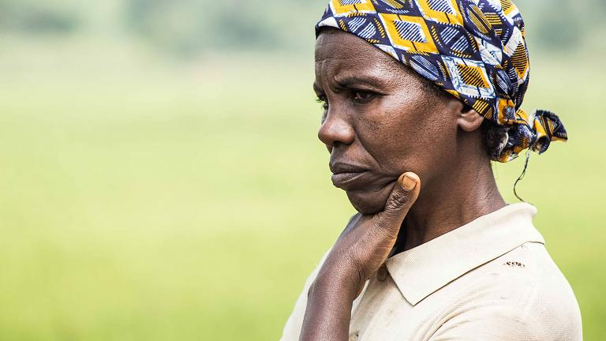

Target 5.2 - Eliminate all forms of violence against all women and girls in the public and private spheres, including trafficking and sexual and other types of exploitation
Overview - Equal rights across gender is a basic human right, and ending gender-basd discrimination is essential for a sustainable future. Equal treatment and empowerment for women has been proven to cause economic and social growth globally.Through many different initiatives, the UNDP has achieved gender parity in many aspects of life, most notably primary education. Although there are more women than ever working in many industries, gender disparity still exists in many regions and many rights are still denied to women.
Overview on Target 5.2 - Around 35% of women around the world have been estimated to have been victims of physical or sexual abuse by either a partner or a non-partner. This number rises to 70% in some studies and some studies also show that victims of this abuse are more likely to become depressed, acquire HIV or other STIs, have issues with alcohol use and abuse, and become injured as a result of their abuse. Human trafficking is another major issue that affects mostly women. Almost 72% of human trafficking victims are women and 75% of all child trafficking victims are girls. For these reasons, Target 5.2 is an essential target and it is important that it is achieved thoroughly and discrimination against women at the national level is closely monitored and discouraged by the UN.
—-—-—-—-—-—-—-—-—-— Charities —-—-—-—-—-—-—-—-—-—
Cooperative for Assistance and Relief Everywhere (CARE)
Ending poverty requires addressing the power inequalities between women and men, girls and boys that underpin gender-based violence. CARE is committed to supporting the empowerment of poor women and girls in their challenges to enjoy happy and healthy lives and to change the contexts in which they live, learn, work and raise families. This includes the organization’s dedication to working with women and men in all settings to confront gender-based violence, which affects at least one in three women worldwide. CARE’s holistic approach to gender-based violence combines prevention with comprehensive service delivery, and addresses root causes driving various forms of gender-based violence and gender discrimination.
Ending Violence Association of Canada
Ending Violence Association of Canada (EVA CAN) is a national non-profit organization whose main purpose is to educate and respond to gender based violence at the national level. EVA CAN has formed in response to the need to foster a national voice, to bring together all of the sectors involved in the array of anti-violence issues for national dialogue and action, for collaboration across provinces and territories to develop comprehensive and coordinated responses, for developing and sharing information and best practices, promoting safety of workers in the field, and creating a more effective gateways to services.
—-—-—-—-—-—-—-—-—-— News —-—-—-—-—-—-—-—-—-—
Gender equality grows as key aspect of sustainable ocean management
Intro: According to the Food and Agriculture Organization, women represent nearly half of the estimated 180 million people worldwide working in fisheries and aquaculture. Many of them in low-skilled, low-paid jobs without contracts or health, safety and labour rights. We look at three voluntary commitments to promote gender equality in the marine industry.
Make this the century of women’s equality: UN chief
The 21st century must be the century of women’s equality, UN Secretary-General António Guterres said on Thursday, in a call to transform the world by ensuring equal participation for all.
Stamps on Gender Equality, Migration and Sexual Exploitation issued today
On 15 March 2019, the United Nations Postal Administration (UNPA) will issue three definitive stamps on the topics of “Stop Sexual Exploitation and Abuse” (US$0.85 stamp), “Gender Equality” (CHF1,50 stamp) and “Migration” (€1,80 stamp).